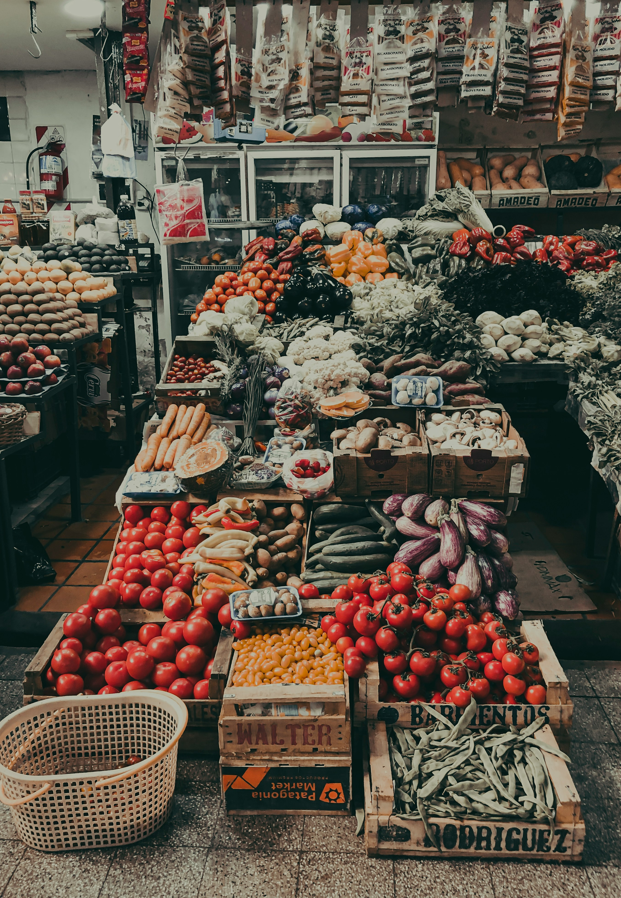
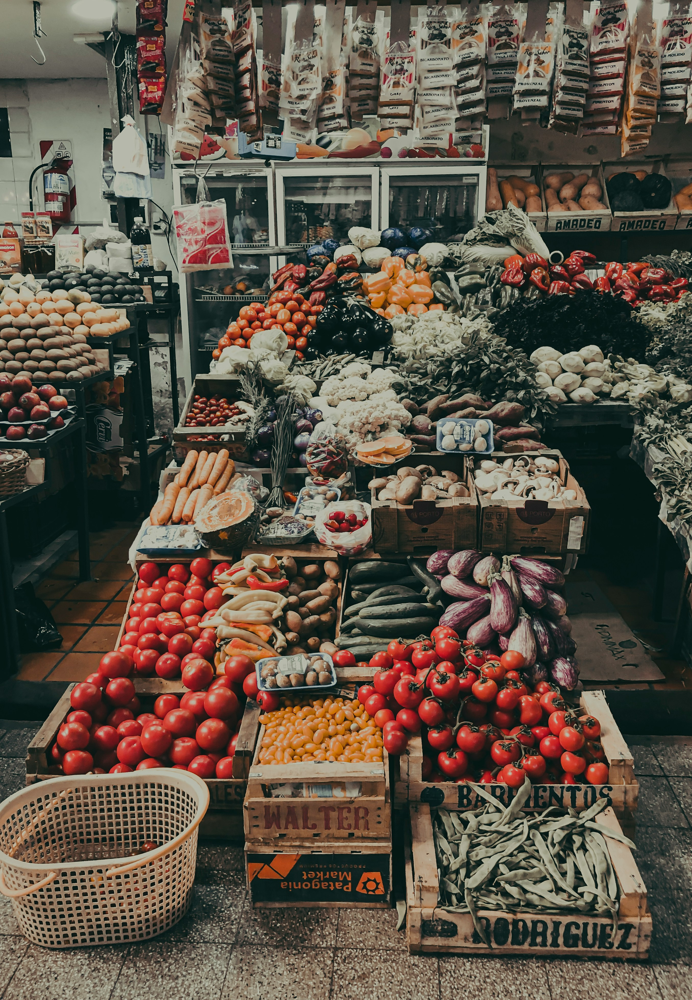

A Agro Etec nasceu com o propósito de conectar pessoas à natureza por meio da agrofloresta alimentar. Nosso e-commerce oferece produtos frescos, sustentáveis e saudáveis direto de quem cultiva com respeito à terra e à biodiversidade.
Nossa História
A ideia surgiu em meio a estudos sobre práticas sustentáveis e alimentação saudável. Vimos na agrofloresta uma forma poderosa de regenerar o solo, preservar o meio ambiente e ainda alimentar comunidades com qualidade. Assim, fundamos a AGro Etec, uma loja online comprometida com o futuro do planeta.
Missão, Visão e Valores
- Missão: Oferecer alimentos agroflorestais frescos, nutritivos e sustentáveis, valorizando o produtor e a natureza.
- Visão: Ser referência nacional em comércio eletrônico de produtos agroflorestais.
- Valores: Sustentabilidade, ética, saúde, respeito à terra e apoio ao pequeno produtor.
O que vendemos?
Em nossa loja, você encontra:
- 🍌 Frutas orgânicas e da estação
- 🥬 Hortaliças cultivadas em sistemas agroflorestais
- 🥚 Ovos caipiras de produção consciente
- 🌾 Grãos e sementes para consumo ou plantio
Por que escolher a Agro Etec?
- 🌱 Produtos saudáveis e sustentáveis
- 👩🌾 Apoio a agricultores locais e familiares
- 📦 Entrega prática e segura direto na sua casa
- 🌍 Compromisso com o meio ambiente e a agroecologia
Fale Conosco
Quer saber mais ou tem dúvidas? Entre em contato pelo e-mail contato@agroetec.com ou acompanhe nossas novidades nas redes sociais!

 
